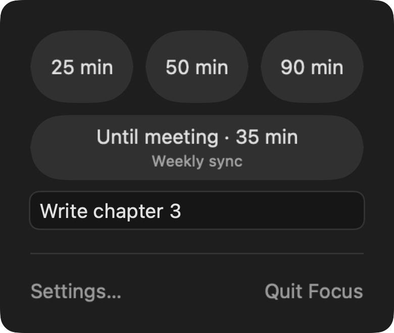

1 of 3
Pick a length
Click the ring in the menu bar and choose 25, 50 or 90 minutes. Type what you're working on, if you like.
Use your calendar and an Until meeting button appears, for a session that ends 5 minutes before your next meeting.